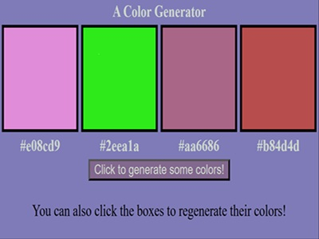
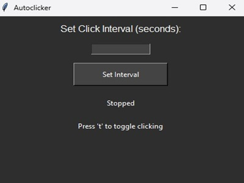
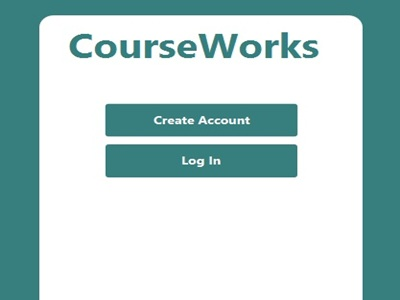
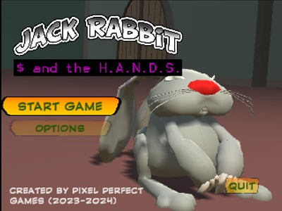
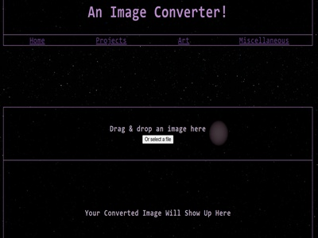
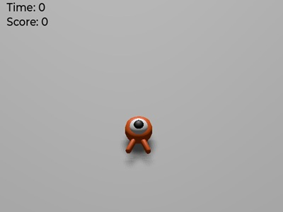

Silly Little Color Generator
I wanted random color palettes, so I got them using Javascript!
Projects
Take a look at some of the things I made~

I wanted random color palettes, so I got them using Javascript!

I play Cookie Clicker from time to time and I don't trust google to get me one without viruses, so I used Python to make my own!

For my Software Development Course, our group went through the full development lifecycle for an application similar to DegreeWorks, our school's degree auditing system. Programmed in Java and JavaFX!

For The University of South Carolina's Big Senior Project (Dubbed the Capstone Computing Project), my group created a short platforming game in Unity Game Engine. You can check out the page we made for the final release as well as the GitHub Repository if you want to!

My background images used to be very large .png files, I saw other websites that could convert images to .webp, so I wanted to be able to do it here as well.

A simple game made with Godot engine.